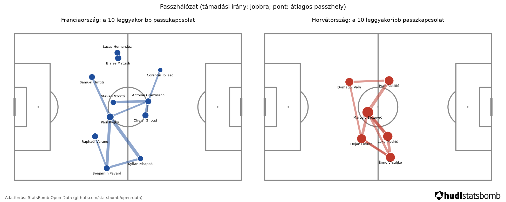
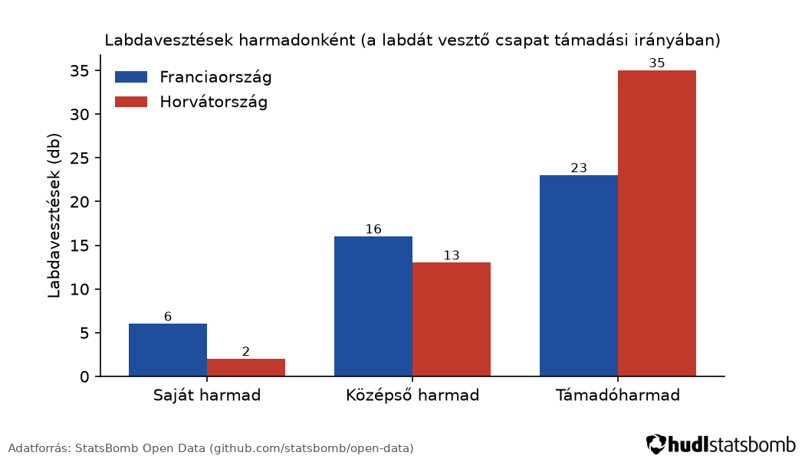

Franciaország – Horvátország
Ez a demó a TaktikAI elemzési lépéseit mutatja be egy teljes mérkőzés nyílt eseményadatain: a számokat kód számolja, a szöveges riportot egy helyben futó nyelvi modell írja, ellenőrzés mellett.
Fő mutatók
| Mutató | Franciaország | Horvátország |
|---|---|---|
| Passzok (nyílt játékból) | 249 | 520 |
| Passzpontosság | 70,3 % | 81,2 % |
| Labdavesztések | 51 | 54 |
| … saját harmadban | 6 | 2 |
| … középső harmadban | 16 | 13 |
| … támadóharmadban | 23 | 35 |
| Letámadási mutató (PPDA-proxy, kisebb = erősebb letámadás) | 34,1 | 10,05 |
| Lövések | 8 | 15 |
| Gólok lövésből | 3 | 2 |
| Várható gólok (xG) összesen | 1,1 | 1,48 |
Ábrák


Edzői riport (gépi, ellenőrzött)
Mintaméret: 95,1 perc, 975 esemény (769 passz, 105 labdavesztés, 78 pontrúgás, 23 lövés). Megbízhatóság: megfelelő – egy teljes mérkőzésnyi adat.
1. Magas labdavesztések a támadóharmadban
A francia csapat magas labdavesztési arányt mutat a támadóharmadban, főként jobb sávban.
- labdavesztések a támadóharmadban: 23 (forrás: get_metric(name=ball_losses_by_zone, team=home) → thirds.final.count)
- labdavesztések aránya a támadóharmadban: 0,511 (forrás: get_metric(name=ball_losses_by_zone, team=home) → thirds.final.share)
Edzésjavaslat: Fokozott nyomás a támadóharmadban, különösen jobb sávban, a labdavesztések csökkentésére.
2. Kevésbé hatékony nyomás
A francia csapat kevésbé hatékony nyomást alkalmazott, mivel magas PPDA-proxy értéke (34,1) jelezte a gyenge ellenfél passzokra való reakciót.
- letámadási mutató (PPDA-proxy): 34,1 (forrás: get_metric(name=ppda, team=home) → value)
- ellenfél passzai a saját területén: 341 (forrás: get_metric(name=ppda, team=home) → opponent_passes)
Edzésjavaslat: A nyomás hatékonyságának javítása a saját területen, különösen a labdavesztések csökkentésére.
Megjegyzés: Az ellenőrző a számokat és azok forrását vizsgálja, a szöveges állításokat nem. Ebben a riportban a „főként jobb sávban” állítást a sávonkénti számok nem támasztják alá: a francia csapat támadóharmadbeli labdavesztései közül több történt a középső sávban, mint a jobb sávban.
Videós demó
Hogyan készült?
- Minden számot kód számol (Python), a StatsBomb eseményadatokból.
- A riport szövegét egy helyben futó nyílt modell írta (hf.co/Qwen/Qwen3-8B-GGUF:Q4_K_M, report_system v3.1, 4 lépés), eszközhívásokkal.
- Egy ellenőrző elutasítja a riportot, ha egy szám nem szerepel az eszközök kimenetében, ha a forrásként megadott mező értéke eltér, ha egy összehasonlítás iránya hibás, vagy ha angol szó, kulcs vagy fordítatlan csapatnév marad benne.
- Forráskód: https://github.com/lendvaioli/taktikai (AGPL-3.0).